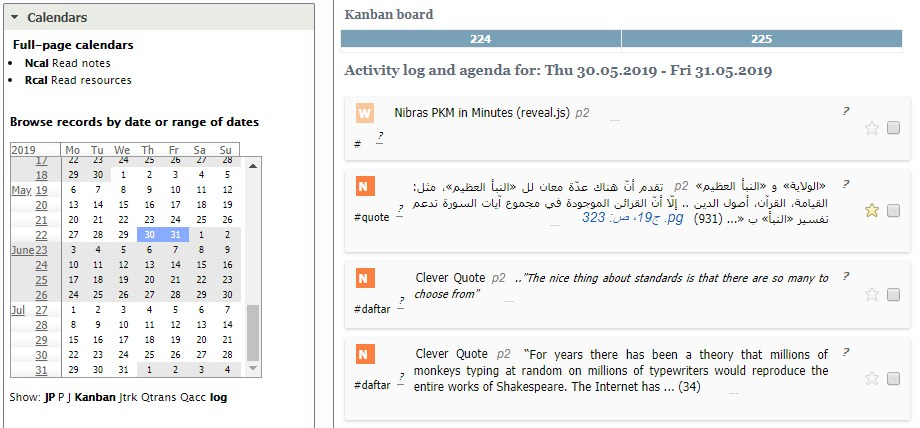
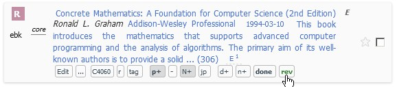

Interface
Nibras is a one-screen application, with 4 regions: north, east, west, and main, in addition to calendar pages and few custom sub-apps.
Regions and panels
Screen regions

Panels
The west panel has many subpanels:
Courses panel lists the active courses, grouped by their departments.

Modules panel lists the saved searches, grouped by their module.

Calendar panel
Clicking on a date in the calendar shows the records created in that date, as well as other records related to the date.

Calendar page
The calendar page shows the journal and planner records, as well as the notes and resouces read withtin a specific time frame.
It is available from the "Calendar" link in the north region of the application.
A sample month view of the calendar

A sample week view of the calendar

The user can add an event to the calendar after selecting a region in the week or day view of the calendar. The text entered can be a free text, in which case a journal record is created with the text as its title, or can be a Nibras command to add more metadata for the record. The command can start with j or p to create a journal or planner record, respectively.

Record display
The record in Nibras can be displayed in full and short form. The full form is the default.

Example of a full form of a resource (book) record, and under it are the actions buttons. They are displayed when the cursor is over the form.
Short form is used in places like tables, to reduce the space occupied by the records.

Keyboards Shortcuts
Some keyboards shortcuts were implemented to speed up nagivation across the application controls, and to toggle the visibility of the panels.
Esc (escape): moves focus (cursor) and cursor to the quick search field.
F7: moves focus (cursor) and cursor to the bottom main command line.
Ctrl + arrows: hides/shows the panel corresponding to the arrow: * left arrow: west region. * right arrow: east region. * top arrow: north region.